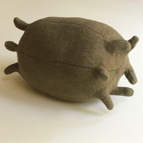
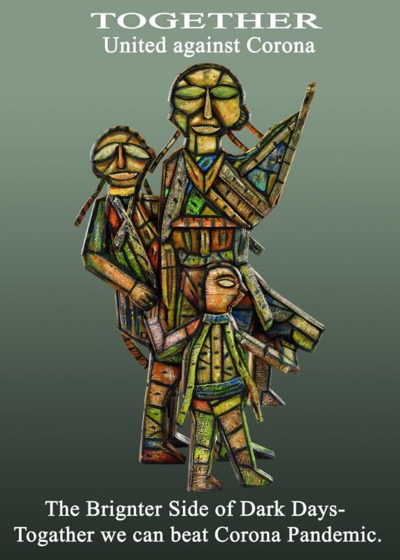

Make Something that makes you feel good.
Here at LUVA we are very aware that the pandemic has generated very stressful situations for some and so during the first lock down we asked artists to send us something they made that makes them feel good. Here are the responses:
LUVA Gallery are hosting an online exhibition exhibiting the work of six of the artists who submitted who our open call Pandemic in Progress: Make Something that Makes You Feel Good.
Get you free tickets HERE
Vomiton (@vomiton) - The Vomiton collective co-founded by Miriam Craddock and Kiera Saunders
during the 2020
Covid- 19 lockdown from a necessity to keep making art without accessibility to the materials and facilities of
the outside world and possibly to stay sane whilst social distancing. The idea was to use anything and everything
(mostly rubbish) going back to our arts and crafts roots to produce alien, animal, plant, spirit creatures,
basically, anything we deemed to be VOMITOMINOUS.
We name our characters after food as the collective panic surrounding supermarkets and food availability made us
start to think more about the unnatural way in which we consume food in modern society, encased in so much plastic
packaging. The names of the characters help us keep to this theme. Vomiton is a collective that involves friends
and family encouraging everyone to think more about their waste and have fun whilst doing so.
The masked face has become the symbol of the pandemic and Vomiton pushes this image to surreal lengths. Humour is
the driving force behind the collective as it's becoming increasingly important to laugh during these times of
isolation.
Jody Mulvey (@joddddddy) - My work revolves around the notion that art can ultimately be a
playful enquiry that oozes joy. The hierarchical structuring of institutional spaces within the arts and the
rituals visitors are required to enact within them, provide the stimulus for my artistic practice. I explore this
by utilising colour, shape and materiality as a medium to subvert the seriousness of institutional spaces and
playfully reconstruct them through my interventions. Drawing, collage and the making of maquettes provide the
preliminary means of envisaging potential encounters between visitors, my artwork and the environment in which
they are situated. I view these modes of exploration as an artistic playground where I am able to mishmash and
meld components together to construct a composition; drawing is like writing to me due to the fluid and impulsive
nature of the mark-making, it is my subconscious rambling.
Due to my degree show being cancelled, I was unable to conceive an installation within a space like I had
intended. My practice has transitioned into predominantly two-dimensional ponderings of the potential interactions
between my work and fictitious spaces that it could inhabit. Drawing and collaging has provided vital solace for
me in amongst the current overwhelming world. My use of colour in my art practice has taken a heightened role
since the beginning of the pandemic; to activate and invigorate spaces within a world that I often think is dull.
It is for precisely this reason I see colour as a beacon of hope. A light at the end of the tunnel. An accomplice
that brightens my gloomy days.
Anamika (@contemporaryartist.anamika) - Anamika describes herself as a pure contemporary artist.
During her work she's moved to the 'pure urban habitats', she found the socio-cultural values at stake as she
found people and their generation full of anxiety, depression, with fast life culture. Her peculiar observation
about the society was the increasing concept of the “Single Child Culture" trend.
Talking about her submission; ‘Good or bad is just two faces of a coin. Yes, Corona is very bad for human beings
but on another side, it's good for nature. Apart from busy life, it's good for a healthy environment, good for a
healthy community. Creating nature's condition makes me good in this global situation.
Demeter Dykes (@demeterdykes) - Demeter Dykes lives and works in Dorset. Her practice revolves
around making materials that are intrinsic to her everyday life. Within this, the act of making is devotional and
mostly at odds with the banality of the material which can be anything from old, shredded bills to empty tea bags
and brown paper packaging to heavy-weight printmaking papers.
She talks about the work submitted; I took part in Thirty Works Thirty Days by @12ocollective (on Instagram) and
this is some of
the work that resulted. These works make me feel good because they were made quickly and with what I had to hand.
They reflect my thinking and emotional response to the current covid/lockdown situation. It was important to me
that they had an element of humor about them mixed with the inevitable anxiety of the time.
Ann Mechelinck (@annmechelinck) - Ann's work is Centred around emotions of loss, love, grief,
hope;
her practice is a never-ceasing journey of exploring materials such as rope, paper, yarns… and favors traditional
processes like hand-sewing, -stitching, and -weaving.
In Mechelincks's artist statement, she states ‘I believe more than ever that traditional skills such as weaving
and embroidery, passed from generation to generation, need to kept alive in today’s day and age where everything
has become mechanized or computerized. For that reason, I deliberately work solely by hand, nurturing a slower
pace of life and a more conscious way of living and working, merging traditional techniques into contemporary,
abstract artworks.’
Astrid Schulz (@subject.to.availability) - Astrid is known for creative portraits and documentary
work. Originally from Germany, she has lived in London since 1994. With a background in costume design for film &
TV and has studied photography at London College of Communication from 2003-05.
Since the pandemic, Astrid is working with topics that are foremost object-based and conceptual. During the first
lockdown, she produced ‘Subject to Availability’; it seemed to have been a lot of people’s ‘cup of tea’.
Currently, she is working on ‘My Parallel Universe’, filled with time-traveling and music.
Johanna Bolton (@johannabolton) - Johanna has mentioned that she had a vision to display this work on
a larger scale, and is now pleased to now be able to try it out using virtual reality!
Johanna Bolton is a Swedish artist living in London. She works mostly in 3D, often in combination with
installation, photography, and performance. Johanna received the 2021 Gilbert Bayes Award from the Royal Society
of Sculptors and has upcoming exhibitions in Italy, Portugal, and the UK this year. She is currently taking part
in Conditions Programme, a one-year mentored studio program in London.





